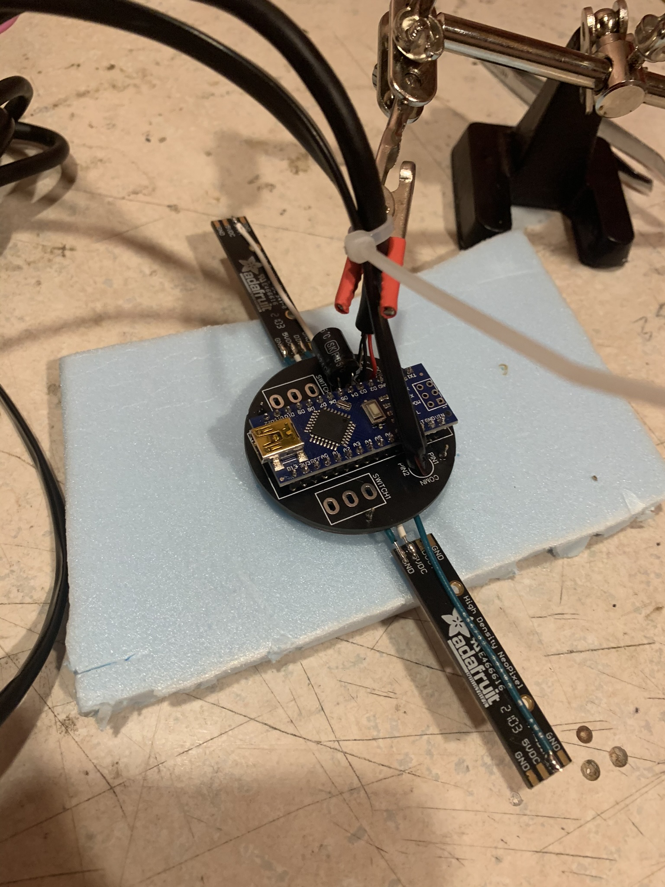
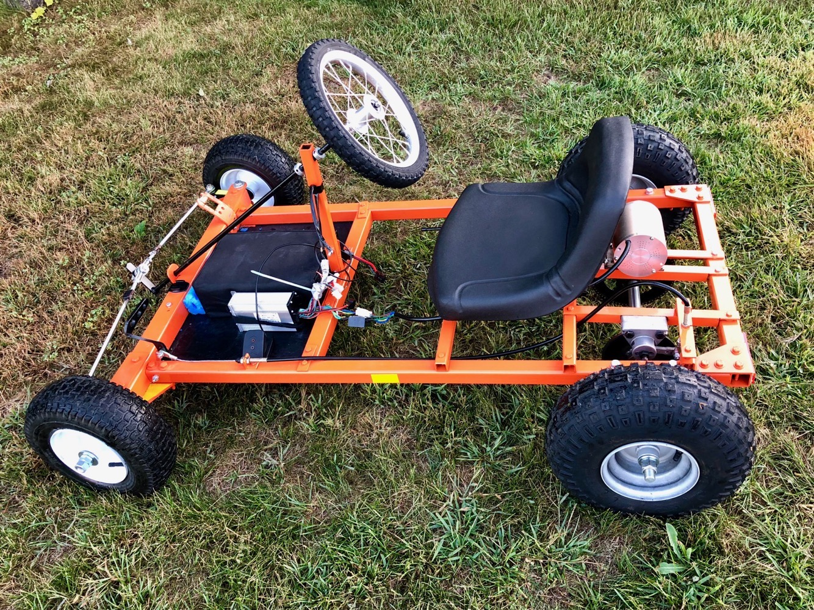
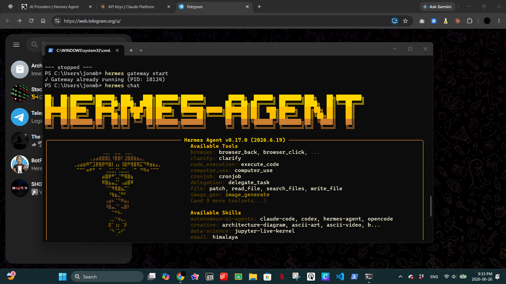

Hi, I'm Jonathan.
I'm a 3rd-year Electrical Engineering student at Carleton University.
A bit about my interests
Before I was building circuits, I was a certified lifeguard, swim instructor, and first aid instructor with the City of Ottawa, and a volunteer coach for competitive speed skaters. Those roles taught me the same lesson twice: stay calm under pressure, document everything properly, and take responsibility when it counts.
That mindset carries into how I approach engineering. I like taking an idea from a rough sketch to something that actually works. Most of my projects come down to the same cycle: build it, test it until it breaks (I like that part more than I probably should), figure out why, and fix it properly. I am always curious to learn about new technology and have recently developed an interest for AI implementation and use cases, which I am hoping to incorporate into some of my future projects.
I'm always open to co-op opportunities, conversations with other engineers, or just learning how things actually work and get done in the real-world.
Check out my builds!
A growing list of different challenges that I tackled - click any card for the full story, photos, and what went wrong along the way.

PCB DesignModular Bicycle Lighting System
Designed and built a weatherproof RGBW lighting system for bicycles.
 Power Electronics
Power Electronics
MOSFET x Off-Road System
Integrated high-power LED lighting into a vehicle using MOSFET switching.

ElectromechanicalElectric Go-Kart
Built a 1.6kW electric go-kart from a welded steel frame.
 Avionics
Avionics
Twin-Engine RC Aircraft
Building the flight controller and RF system for a twin-engine RC aircraft.

Software & AICustom AI Agent Setup
Set up a personal AI agent to automate everyday tasks.
Tools & technical proficiencies
Design & Simulation
- Altium Designer
- EasyEDA
- NI Multisim
- Vivado
- Autodesk Fusion CAD
Programming
- C / C++
- Python
- Java
- Verilog HDL
- Git Version Control
Hardware
- Soldering & Rework
- Oscilloscope / Multimeter
- 3D Printing & Prototyping
- Breadboarding
- Component Analysis
Platforms
- Arduino
- Raspberry Pi
- FPGA
- LaTeX
- Jupyter Notebook
Let's build something.
I'm currently looking for a 2027 Summer co-op placement. Always happy to talk about a project, a role, or just electronics and technology in general.